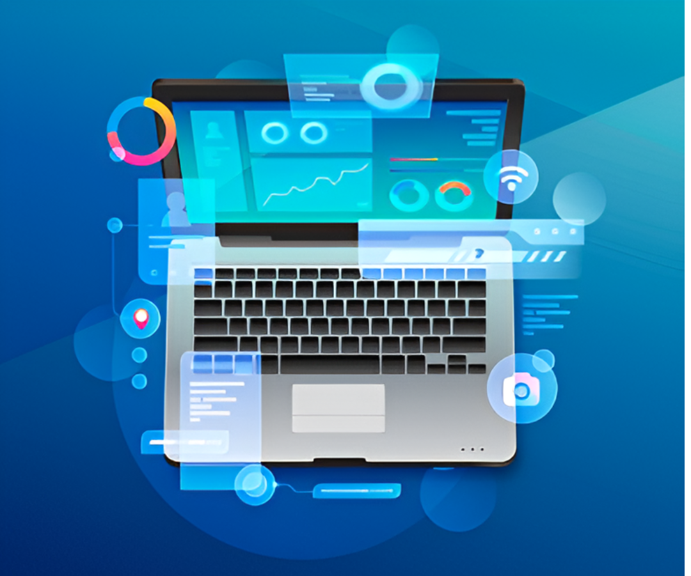
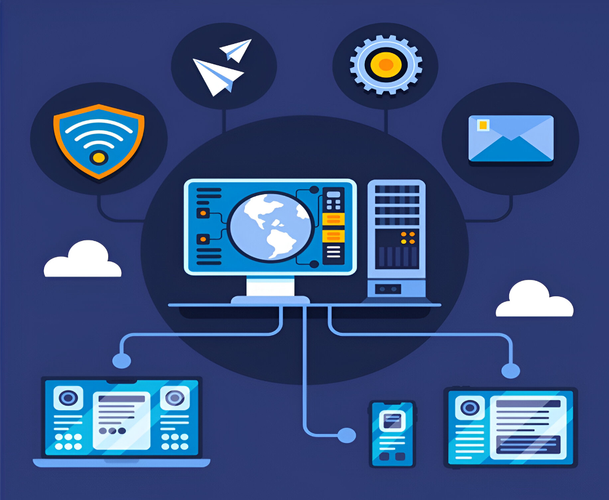

¿Qué es la Informática?
La Informática es la disciplina o campo de estudio que abarca el conjunto de conocimientos, métodos y técnicas referentes al tratamiento automático de la información, junto con sus teorías y aplicaciones prácticas, con el fin de almacenar, procesar y transmitir datos e información en formato digital utilizando sistemas computacionales.
No existe realmente una definición única y universal de lo que la informática es, quizá porque se trata de una de las disciplina de más reciente origen, aunque de desarrollo más vertiginoso y desenfrenado.
Por eso en muchos espacios académicos suelen diferenciar entre esta disciplina y las ciencias de la computación (o la ingeniería informática), considerando que estas últimas posen un abordaje más teórico de la materia, mientras que la informática tiene siempre un costado práctico y aplicado, vinculado con los dispositivos electrónicos.
En todo caso, la informática como disciplina tiene que ver con el procesamiento automático de la información a través de dispositivos electrónicos y sistemas computacionales, dotados estos últimos de tres funciones básicas: el ingreso de datos (entrada), el procesamiento de datos y la transmisión de resultados (salida).
Características de la Informática
La informática, a grandes rasgos, puede caracterizarse de la siguiente manera:
Enfoque mixto. Se propone tanto el abordaje teórico como el práctico de los sistemas informáticos, aunque no se trata de una ciencia experimental.
Innovación. Está en una evolución constante: las tecnologías más digitales y fáciles de usar reemplazan las obsoletas.
Lenguaje formal. Está en una evolución constante: las tecnologías más digitales y fáciles de usar reemplazan las obsoletas.
Interactividad. La tecnología de la información estimula la interacción entre un producto y un usuario.
Información. Su objeto de estudio puede resumirse en el tratamiento automatizado de la información mediante sistemas digitales computarizados.
Versatilidad. La misma tecnología puede tener varias aplicaciones y adaptarse según las necesidades del sector.

Conceptos basicos de la infotmatica
Los conceptos más básicos de la informática son el hardware y el software.
software
El software vendría a ser la mente del sistema informático, intangible, abstracto y sólo accesible a través del sistema. Existen muchísimos tipos de software, algunos de los cuales vienen ya preinstalados en sectores críticos de la computadora, mientras que otros sirven de interfaz entre el sistema y los usuarios, gobernando los dispositivos, controlando los recursos y permitiendo la instalación de programas secundarios que el usuario desee.
hardware
El hardware es el aspecto físico, rígido, concreto y tangible de los sistemas informáticos. Son, así, las piezas y componentes que podemos tocar, intercambiar, romper, etc., algo así como el “cuerpo” de la computadora.
En dicha categoría se incluyen los componentes vitales de procesamiento (como el procesador de cálculo) o los dispositivos de almacenamiento (la memoria y los discos rígidos), pero también los dispositivos periféricos, que son aditamentos independientes del sistema, que se conectan con él para permitirle desempeñar diversas funciones.

Importancia de la informática
La importancia de la informática hoy en día no podría ser más evidente. En un mundo hipertecnologizado e hiperconectado, la información se ha convertido en uno de los activos más preciados del mundo, y los complejos sistemas informáticos que hemos construido nos permiten administrarlo de manera más veloz y eficiente que nunca antes en la historia.
La computación es una de las disciplinas de mayor demanda en el mercado universitario del mundo. Tiene la mayor y más rápida salida laboral, dado que casi ningún aspecto de la vida cotidiana se mantiene al margen todavía del mundo digital y de los grandes sistemas de procesamiento de información.
